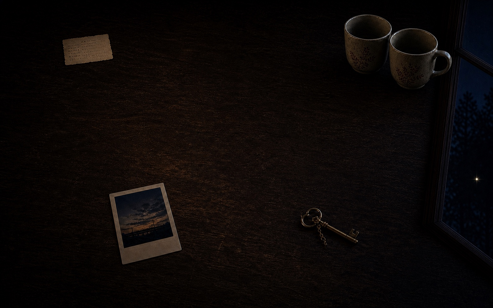

把夜晚照成我们
有些小事藏在暗处，等你慢一点，把光停在它们身上。
提起这盏灯，找找房间里留下的五点微光。看见以后别急着走，停一会儿，它才会记住你。
灯还在桌面中央。

当前浏览器不能显示移动光圈，你仍然可以用“直接点亮”打开完整内容。
舞台获得焦点后可用方向键移动，按 Home 回到中央。
已经亮起
0 / 5
本地 · 不保存
有些小事藏在暗处，等你慢一点，把光停在它们身上。
提起这盏灯，找找房间里留下的五点微光。看见以后别急着走，停一会儿，它才会记住你。

当前浏览器不能显示移动光圈，你仍然可以用“直接点亮”打开完整内容。
舞台获得焦点后可用方向键移动，按 Home 回到中央。
0 / 5
本地 · 不保存